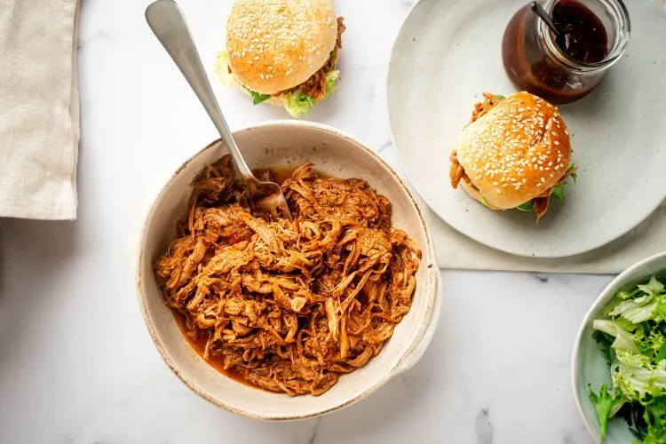

Home
Slow Cooker Spicy Pulled Pork

Description
Tender spicy slow cooker pulled pork, perfect for sandwiches, tacos, and more!
Cook time: 8 hours
Ingredients
- 3 lbs. lean pork tenderloin
- 1 onion, quuartered
- 4 garlic cloves, sliced
- 4 jalepenos, whole
- 1 tbsp paprika
- 1 tbsp garlic powder
- 1 tbsp chili powder
- 2 tsp salt
- 2 tsp cumin
- 1 tsp pepper
- 1 cup bbq sauce (I used sweet and spicy, sweet baby rays)
- 1/2 cup low sodium chicken broth
Steps
- Put the tenderloin in slow cooker, top and rub with spices.
- Place the onions, garlic, and whole jalepenos below or around the pork.
- Mix together bbq sauce and broth in a bowl and pour over pork.
- Cook on low for 8 hours. Shred with two forks and let pork rest in sauce for 30 minutes with the slow cooker open and on low so the sauce can thicken.